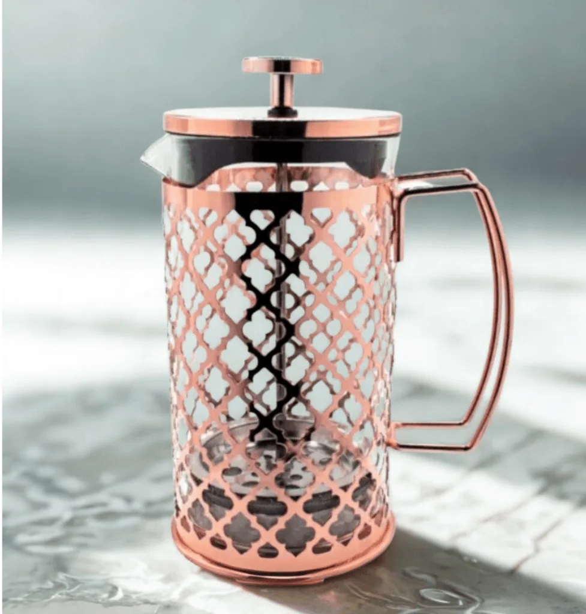
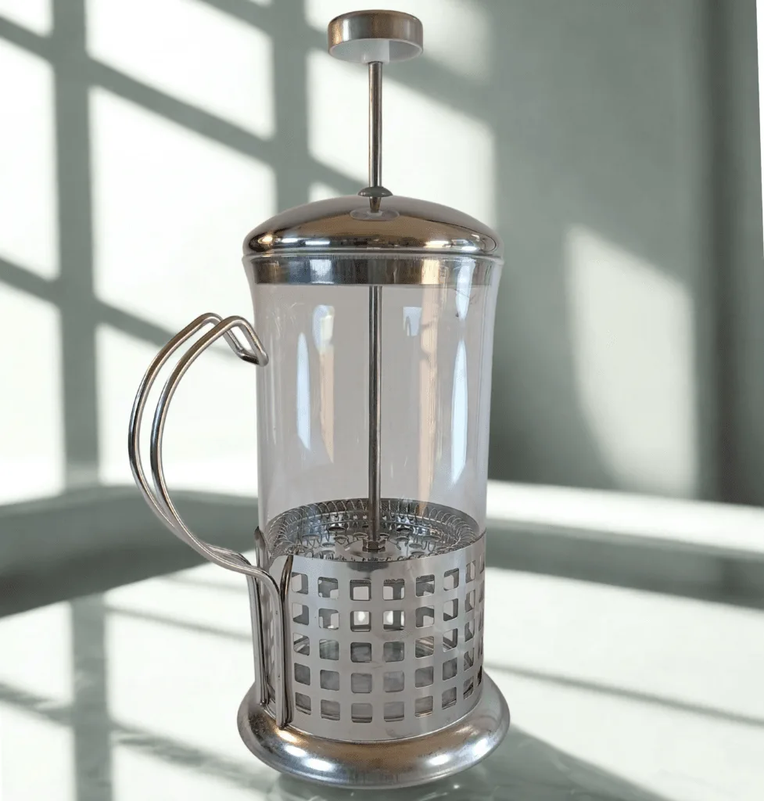

InicioComplementosPrensa francesa
ComplementosPrensa Francesa
Vidrio borosilicato de alta resistencia y acabado cobrizo Café Alegra. Extracción limpia por inmersión.


InicioComplementosPrensa francesa
ComplementosVidrio borosilicato de alta resistencia y acabado cobrizo Café Alegra. Extracción limpia por inmersión.

